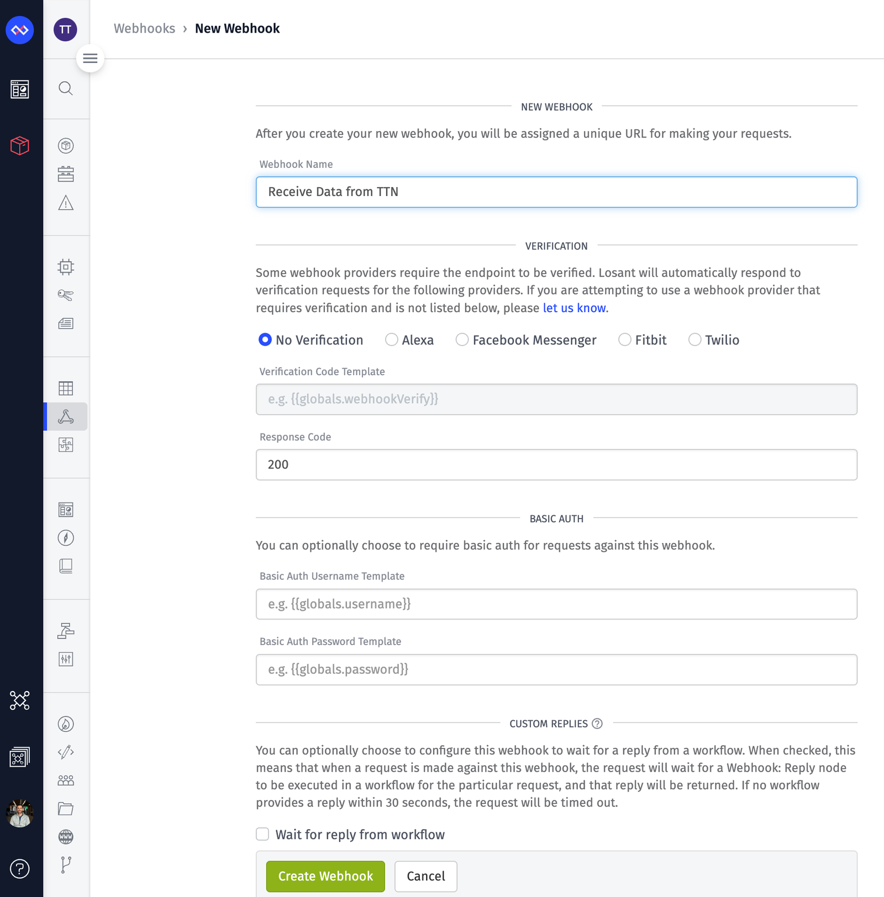
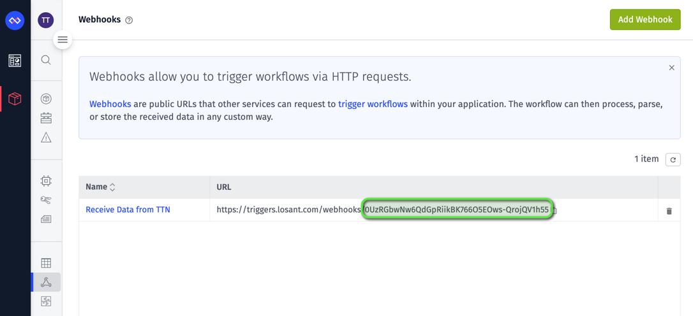
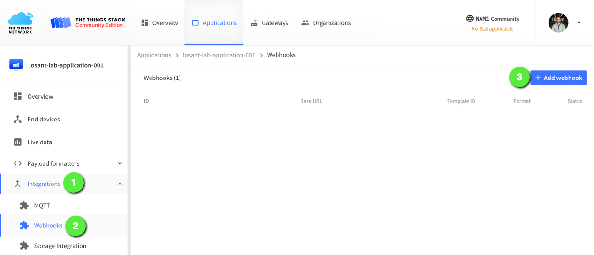
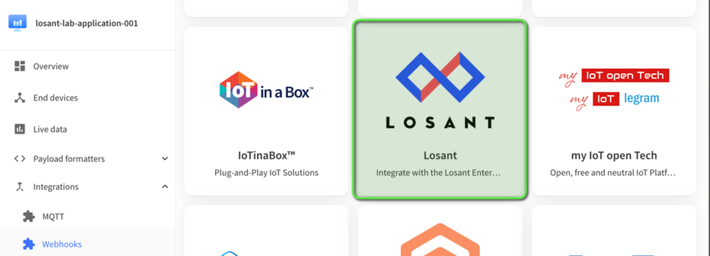
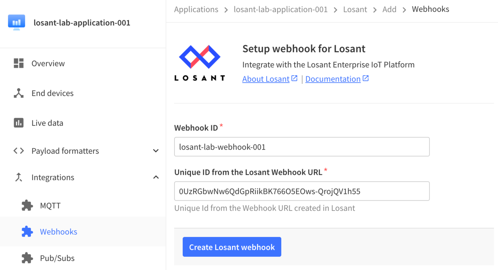

Losant’s Enterprise IoT Platform provides the complete edge and cloud software foundation to build and scale compelling IoT applications for your customers.
The Losant platform consists of 5 main components to help build an IoT solution and get it to market quickly. These 5 components are Edge Compute, Devices and Data Sources, Data Visualizations which includes Jupyter Notebooks, a Visual Low-Code/No-Code Workflow Engine, and End User Experiences.
Enter a Webhook Name and then click Create Webhook.

Once the Webhook is created, copy the unique identifier from the URL that comes after https://triggers.losant.com/webhooks/. This value will be used below when configuring The Things Stack.

Configure The Things Stack
Ensure that you have a The Things Stack account and an application setup. If you do not, follow the steps detailed in this Losant How-To Guide, How to Integrate with The Things Stack.
Navigate to your application and click Integrations, then Webhooks, and then Add webhook.

Click on the Losant Webhook template.

Enter the following information into the Losant Webhook template configuration and then click Create Losant webhook.
Webhook ID: any unique identifier here will work
Unique ID from the Losant Webhook URL: this is the Unique ID from the Losant Webhook that was just created and copied to the clipboard.

Once you have added the integration, ensure that you have a Losant Application Workflow created to receive this data which is detailed in the Losant How-To Guide, How to Integrate with The Things Stack. You can also edit this Webhook integration once it is created to include additional options such as Basic Auth or to enable other message types (Downlink ack, Downlink sent, Downlink failed, etc.) to be forwarded to Losant.
Troubleshooting
If you run into any issues or have any further questions, please reach out to Losant on the Losant Forums.